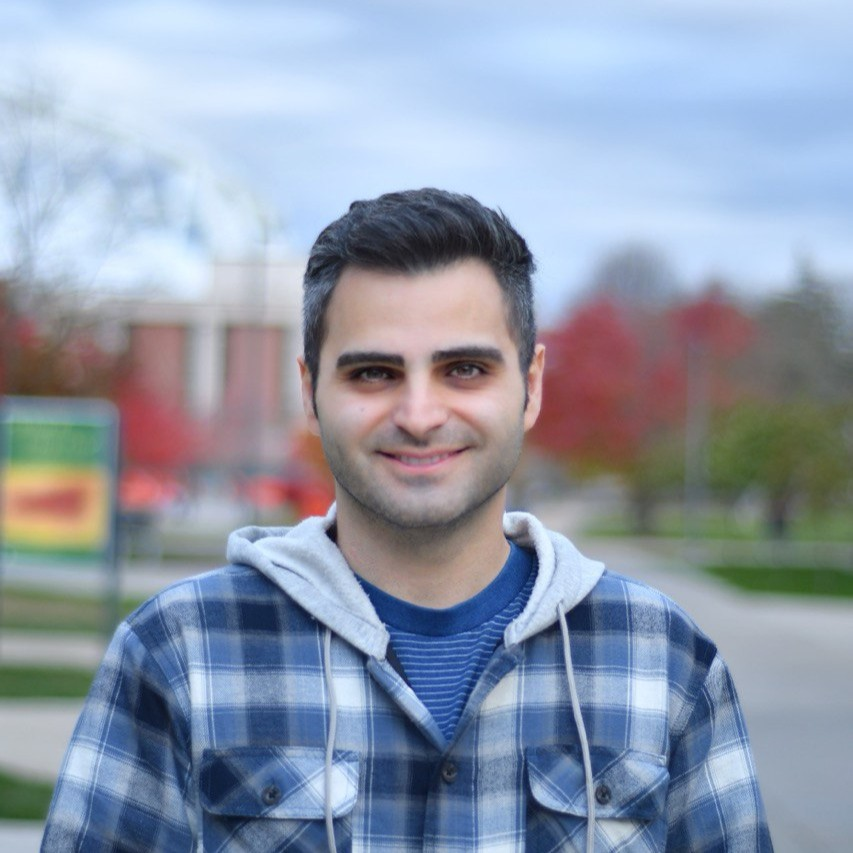

Sensing / IoT
Environmental Sensing & IoT
Multi-sensor hardware — including a 12-sensor ESP32 air-quality box and a LoRaWAN PIR occupancy network — validated against real-world ground truth.
Environmental Systems · SUNY ESF
Researcher · Engineer · Builder · Artist
I build sensors, run simulations, and study how buildings and cities breathe — bringing a decade of mechanical & CFD engineering into environmental research on indoor air quality, urban microclimate, and building resilience.

Fig. 01 — Focus areas
Four threads that keep pulling on each other — hardware that measures the environment, models that explain it, and buildings that have to survive it.
Sensing / IoT
Multi-sensor hardware — including a 12-sensor ESP32 air-quality box and a LoRaWAN PIR occupancy network — validated against real-world ground truth.
Simulation
ENVI-met modeling of highway pollution dispersion and green-infrastructure mitigation around the SUNY ESF campus corridor.
Building science
Chapter and figure contributions to Green Building Illustrated (3rd ed.), on passive survivability and indoor air quality under adverse conditions.
CFD / Thermal
A decade of CFD-driven mechanical design in Ansys Fluent — from HVAC systems to a smart evaporative cooling platform cutting energy use by 30%.
Fig. 02 — Selected work
Sensors in the field, models on the cluster, figures in print.
Sensing & IoT
2025 — 2026
A LoRaWAN PIR sensor network paired with a state-machine algorithm to detect home occupancy, validated minute-by-minute against Google Maps Timeline as ground truth.
Sensing & IoT
2025 — 2026
An ESP32-based air-quality device integrating twelve sensors — particulate matter, gases, wind, light, temperature and humidity — with live Firebase logging and a real-time web dashboard.
Simulation
2026
ENVI-met simulation of traffic-related pollution dispersion along the I-81 corridor adjacent to SUNY ESF, modelling green-space removal and restoration scenarios at two-metre resolution.
Publishing
2026
Contributing chapter content and technical figures with Prof. Ian Shapiro and illustrator Frank Ching, covering resilience, passive survivability, and shelter-in-place design.
No projects in this category yet.
Fig. 03 — Background
I'm a graduate Research Assistant at SUNY ESF's Baker Lab in Syracuse, NY, working under Prof. Shayan Mirzabeigi, and beginning a Master's program at SUNY ESF in August 2026.
Before moving into environmental research, I spent over a decade in mechanical design, CFD, and project management — designing HVAC systems, running Ansys Fluent simulations, and managing engineering teams in Tehran. That background now shapes how I approach environmental sensing and building science: as systems to be measured, modelled, and improved.
Sep 2025 — Present
Research Assistant, Thermal & Environmental Systems
SUNY ESF · Baker Lab
Aug 2024 — Aug 2025
Research Assistant, Thermal & Environmental Systems
SyracuseCoE
Jul 2020 — Aug 2023
Company Manager
AIROMAX
Jul 2020 — Aug 2023
Mechanical Designer, CFD Analyst & Project Manager
ElectroMotoTech — led development of a Smart Evaporative Cooling System (30% energy reduction, 25% water savings)
Jun 2009 — Jun 2020
Mechanical Design Engineer
Havayar Industrial Group
Aug 2026 —
M.S., Environmental Science Incoming
SUNY College of Environmental Science & Forestry
2013 — 2015
M.S., Aerospace & Aeronautical Engineering
K. N. Toosi University of Technology
2007 — 2012
B.S., Mechanical Engineering
Islamic Azad University
Fig. 04 — Beyond the lab
Outside of research, I draw detailed geometric compositions in marker on black canvas — including a full reproduction of the Notre-Dame rose window. The same precision that goes into a state-machine algorithm or a CFD mesh shows up here as radial symmetry and pattern. I'm currently developing a Sacred Geometry series exploring Gothic rose windows and Islamic geometric tilework.
I ride regularly and follow soccer closely — both a counterbalance to long stretches at a workstation and, if I'm honest, another kind of systems thinking: pacing, positioning, reading a changing field in real time.